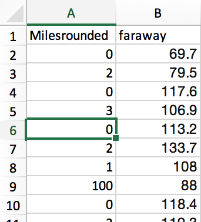

A common task often faced is choosing the best way to group data.
This is especially important for visualisation, where you may want to represent a continuous variable in discrete color groups.
This tool presents three ways of doing this, together with how this relates to the distribution of data:
CKmeans - An algorithm that clusters the data to maximise differences between the data. Very similar to Jenks/Natural breaks algorithm
Equal interval - Divides the whole range of data values into groups of an equal range (e.g. 0-2, 3-5, 6-9, 10-12).
k-quantile - Divides the data into equally sized groups ie the same number of areas are in each group.
This page allows you to load a csv file, that has each value listed in seperate rows, in a single column. The column needs a header (no gaps in the name). You can have multiple columns and it'll return a set of bins for each column. The file would look a bit like this.

You can tweak the number of breaks you'd like for your application.
First select some data...
Credit to Tom Macwright and contributors for the Simple Statistics package which brought several of these methods and many other useful statistical techniques to javascript.